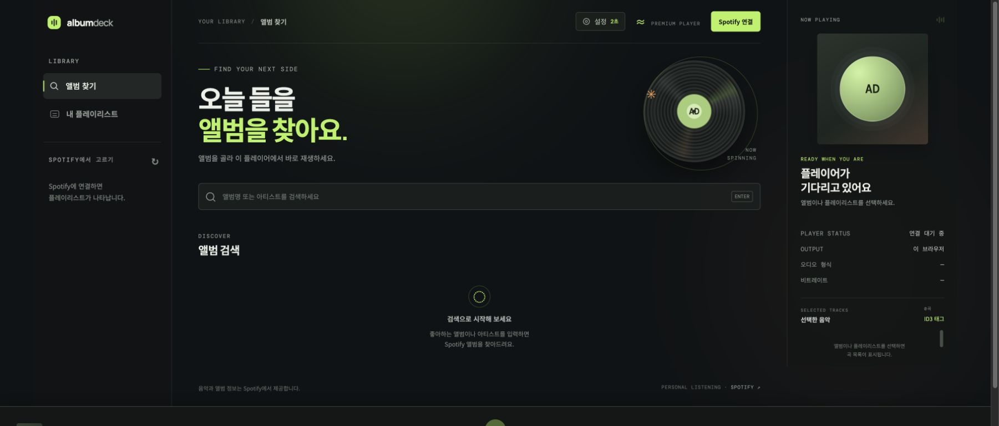
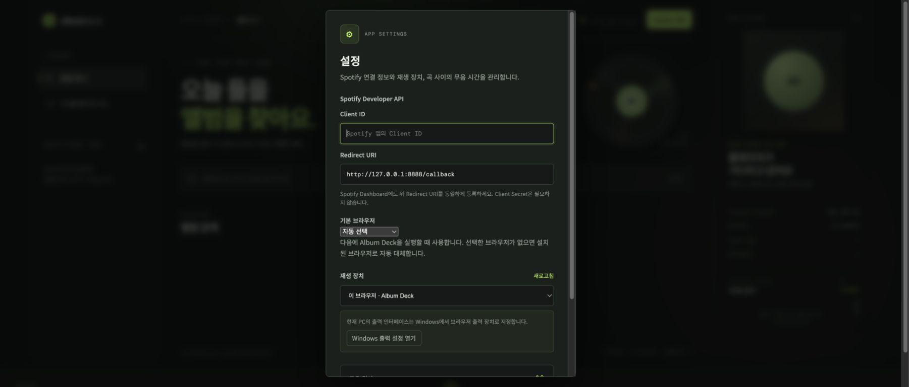

Album Deck
Album Deck은 Spotify 앨범과 플레이리스트를 한 곡씩 재생하고, 곡 사이에 지정한 무음 시간을 넣어 MiniDisc 녹음을 돕는 개인용 웹 플레이어입니다. Spotify 음원을 내려받거나 저장하지 않으며, 브라우저에서 Spotify Web Playback SDK와 Web API를 직접 사용합니다.

주요 기능
- 앨범명 또는 아티스트 검색 후 앨범 전체 순서 재생
- 사용자의 Spotify 플레이리스트 조회 및 순서 재생
- 곡 사이에 0~30초의 무음 삽입(0.5초 단위)
- Album Deck 브라우저 플레이어 또는 다른 Spotify Connect 장치 선택
- Windows 앱별 출력과 macOS 시스템 출력 설정 안내
- 프로그램의 도움말 버튼에서 한글·영문 전체 사용설명서 열기
- 선택한 Spotify 곡 정보로 MP3 파일의 ID3 태그 기록
- Windows 설치 스크립트, npm 실행, Vercel 및 일반 Node.js 배포 지원
준비물
- Windows 10/11, macOS 또는 Node.js를 실행할 수 있는 환경
- Node.js 20 이상(Windows 배포 ZIP의 설치 스크립트는 필요하면 자동 설치)
- Spotify Premium 계정
- 사용자가 만든 Spotify Developer 앱의 Client ID
- 광출력 또는 아날로그 출력으로 녹음할 경우 PC와 MD 레코더를 연결할 오디오 케이블
Spotify 앱이 개발 모드라면 실제로 로그인할 Spotify 계정을 Developer Dashboard의 사용자 목록에 등록해야 합니다. Client Secret은 입력하거나 배포하지 않습니다.
가장 빠른 시작: Windows 배포 ZIP
- 최신 Windows 배포 ZIP을 내려받습니다.
- ZIP 파일을 새 폴더에 완전히 압축 해제합니다. ZIP 내부에서 설치 파일을 바로 실행하지 마세요.
- 압축을 푼 폴더의
install-windows.cmd를 더블 클릭합니다. - Node.js 20 이상이 없으면 설치 스크립트가 Windows
winget으로 Node.js LTS를 설치합니다. Windows 권한 확인 창이 나타나면 설치를 허용합니다. - 설치가 끝나면 바탕 화면의 Album Deck 바로가기를 실행합니다.
- 아래의 Spotify Developer 앱 준비와 Album Deck 최초 설정을 한 번만 진행합니다.
설치 위치는 %LOCALAPPDATA%\Programs\AlbumDeck입니다. 바탕 화면과 시작 메뉴에는 Album Deck 바로가기가, 시작 메뉴에는 백그라운드 서버를 끝내는 Album Deck Stop 바로가기가 만들어집니다. 실행 창은 Edge를 우선 사용하며, Edge가 없으면 Chrome 또는 시스템 기본 브라우저를 사용합니다.
winget을 찾을 수 없다는 메시지가 나오면 Microsoft Store에서 App Installer를 설치하거나 Node.js 20 이상을 직접 설치한 뒤 install-windows.cmd를 다시 실행하세요.
기존 설치 업데이트
새 배포 ZIP을 별도 폴더에 압축 해제하고 install-windows.cmd를 다시 실행합니다. 실행 중인 Album Deck 서버를 정지한 뒤 프로그램 파일과 바로가기를 갱신합니다. 같은 Windows 사용자와 브라우저 프로필을 사용하면 저장된 Client ID, 로그인 정보, 재생 장치와 무음 길이는 유지됩니다.
macOS에서 실행
macOS에서 album-deck 명령을 실행하면 Safari가 기본으로 열립니다. 설정 → 기본 브라우저에서 설치된 Chrome 또는 Edge를 선택할 수도 있으며, 선택한 브라우저가 없으면 Safari로 자동 대체합니다. Spotify Web Playback SDK는 데스크톱 Safari를 지원합니다.
macOS의 시스템 설정 → 사운드 → 출력에서 MD 레코더에 연결된 장치를 선택할 수 있습니다. 이 설정은 Safari만이 아니라 Mac 전체 출력에 적용됩니다. Safari만 별도 장치로 보내고 다른 앱은 내장 스피커로 유지하려면 SoundSource 같은 앱별 오디오 라우팅 도구가 필요합니다.
Spotify Developer 앱 준비
Spotify 로그인과 재생을 위해 본인의 Spotify Developer 앱이 필요합니다.
- Spotify Developer Dashboard에 Spotify 계정으로 로그인합니다.
- Create app을 선택하고 앱 이름과 설명을 입력합니다. 예: 이름
Album Deck, 설명Personal MiniDisc recording player. - Redirect URI에 아래 주소를 정확히 입력합니다.
http://127.0.0.1:8888/callback- Web API와 Web Playback SDK를 사용할 앱으로 저장합니다.
- 생성한 앱의 Client ID를 복사합니다. Client Secret은 사용하지 않습니다.
- 앱이 개발 모드이고 로그인할 계정이 앱 소유자와 다르면 앱 설정의 사용자 관리 화면에서 해당 Spotify 계정을 추가합니다.
Redirect URI는 localhost가 아니라 127.0.0.1이어야 하며, 프로토콜·포트·경로와 끝 슬래시 여부까지 등록값과 완전히 같아야 합니다. 공개 서버에 배포할 때는 해당 HTTPS 배포 주소의 /callback도 별도로 등록합니다.
Album Deck 최초 설정
바탕 화면의 Album Deck을 실행하거나 npm start 후 http://127.0.0.1:8888을 엽니다.
- 화면 위쪽의 설정을 누릅니다.
- Client ID에 Spotify Dashboard에서 복사한 값을 붙여 넣습니다.
- Redirect URI가
http://127.0.0.1:8888/callback인지 확인합니다. - 다음 실행에 사용할 기본 브라우저를 고릅니다. Windows에서는 Edge 또는 Chrome을, macOS에서는 Safari를 기본으로 사용합니다.
- 재생 장치에서 다음 중 하나를 고릅니다.
- 이 브라우저 · Album Deck: 현재 PC에서 소리를 출력합니다. MD 녹음에는 보통 이 항목을 사용합니다.
- 다른 Spotify Connect 장치: 목록에 표시된 별도 장치에서 재생합니다.
- 무음 길이를 정합니다. MD가 곡 경계를 안정적으로 인식하는 값은 레코더와 연결 방식에 따라 다르므로 먼저 2~3초로 시험하는 것을 권장합니다.
- 저장을 누릅니다.

설정값과 로그인 토큰은 현재 브라우저의 로컬 저장소에 보관됩니다. 공용 PC에서는 사용 후 Spotify 연결됨 → 연결 해제를 선택하세요.
Spotify 연결
- 오른쪽 위의 Spotify 연결을 누릅니다.
- Spotify 로그인 및 권한 화면에서 사용할 Premium 계정을 선택합니다.
- 승인이 끝나면 Album Deck으로 자동 복귀합니다.
- 버튼이 Spotify 연결됨으로 바뀌고 플레이리스트가 표시되는지 확인합니다.
다른 Spotify 계정을 쓰려면 Spotify 연결됨 → 다른 계정으로 연결을 선택합니다. Spotify 로그인 화면에 기존 계정이 자동 선택되면 Not you?를 눌러 계정을 변경합니다.
첫 로그인에서는 다음 권한을 요청합니다: streaming, user-read-private, user-read-email, user-read-playback-state, user-modify-playback-state, playlist-read-private, playlist-read-collaborative.
앨범 또는 플레이리스트 재생
화면 위쪽의 도움말을 누르면 이 사용설명서를 앱 안에서 열 수 있습니다. 도움말 위쪽의 English로 영문 설명서로 전환할 수 있고, 새 창에서 열기를 누르면 더 큰 브라우저 창에서 볼 수 있습니다.
앨범 재생
- 왼쪽에서 앨범 찾기를 선택합니다.
- 검색 칸에 앨범명이나 아티스트명을 입력하고 Enter를 누릅니다.
- 검색 결과에서 앨범 카드를 선택합니다.
- 오른쪽 선택한 음악에서 곡과 순서를 확인합니다.
- 첫 곡부터 자동으로 재생되며 각 곡이 끝날 때 설정한 무음 뒤에 다음 곡이 시작됩니다.
플레이리스트 재생
- 왼쪽에서 내 플레이리스트를 선택합니다.
- 원하는 플레이리스트를 선택합니다.
- 오른쪽 곡 목록과 순서를 확인한 뒤 재생합니다.
Album Deck은 Spotify의 원본 앨범이나 플레이리스트를 수정하지 않습니다. 재생할 수 없는 곡은 대기열에서 제외될 수 있으므로 녹음 전에 화면에 표시된 실제 곡 수를 확인하세요.
아래 플레이어에서는 재생·일시정지, 이전/다음 곡, 재생 위치와 볼륨을 조절할 수 있습니다. 브라우저 플레이어의 AAC · 256 kbps 표시는 Spotify 웹 플레이어의 안내 규격이며, 현재 스트림을 직접 측정한 값은 아닙니다. 다른 Spotify Connect 장치의 실제 형식과 비트레이트는 확인할 수 없어 확인 불가로 표시됩니다.
MiniDisc 녹음 방법
1. 연결과 오디오 출력 확인
- PC의 광출력 또는 오디오 인터페이스 출력을 MD 레코더의 입력에 연결합니다.
- Album Deck 설정 → 재생 장치에서 이 브라우저 · Album Deck을 선택합니다.
- Windows에서는 Windows 출력 설정 열기를 눌러 Edge 또는 Chrome의 출력을 MD 레코더에 연결된 장치로 지정합니다.
- macOS에서는 시스템 설정 → 사운드 → 출력에서 MD 연결 장치를 선택합니다. macOS 기본 설정은 시스템 전체 출력을 바꾸므로 Safari만 별도로 지정하려면 앱별 오디오 라우팅 도구를 사용해야 합니다.
- Spotify나 시스템 알림 등 다른 소리가 같은 출력으로 나가지 않도록 닫거나 다른 출력 장치로 옮깁니다.
- 짧은 곡으로 시험 재생해 MD 레코더의 입력 레벨과 좌우 채널을 확인합니다.
2. 곡간 무음 시험
- MD 레코더의 자동 트랙 마크 기능을 켭니다.
- Album Deck의 무음 길이를 우선 2~3초로 설정합니다.
- 두세 곡을 시험 녹음합니다.
- MD에서 각 곡이 별도 트랙으로 나뉘었는지 확인합니다.
- 한 트랙으로 합쳐지면 무음 길이를 늘리고, 불필요하게 나뉘면 레코더의 트랙 마크 설정과 입력 레벨을 확인합니다.
3. 실제 녹음
- Album Deck에서 앨범 또는 플레이리스트를 선택하고 오른쪽 곡 순서를 확인합니다.
- MD 레코더를 녹음 대기 상태로 둡니다.
- MD 녹음을 시작한 뒤 Album Deck에서 첫 곡을 재생합니다.
- 녹음 중에는 Album Deck 창을 닫거나 PC를 절전 상태로 두지 마세요. 이 페이지가 곡 종료와 다음 곡 시작을 제어합니다.
- 마지막 곡이 끝나고 플레이어가 멈춘 것을 확인한 뒤 MD 녹음을 종료합니다.
- MD의 곡 수, 순서, 시작 부분과 끝부분을 확인합니다.
Spotify 또는 네트워크 응답 지연 때문에 설정한 무음 뒤에 다음 곡 준비 시간이 조금 더 붙을 수 있습니다. 중요한 녹음 전에는 실제 레코더와 같은 연결로 시험 녹음하세요.
MP3 파일에 ID3 태그 기록
이 기능은 이미 가지고 있는 MP3 파일에 현재 선택한 Spotify 앨범·플레이리스트의 메타데이터를 기록합니다. Spotify 음원을 MP3로 저장하는 기능은 아닙니다.
- 앨범이나 플레이리스트를 먼저 선택합니다.
- 오른쪽 선택한 음악 위의 ID3 태그를 누릅니다.
- MP3 폴더 선택을 눌러 파일이 있는 폴더를 선택합니다.
- 화면에 표시된 파일 수와 Spotify 곡 수를 확인합니다.
- 파일명이 자연스러운 숫자 순서(
01,02,03…)가 되도록 미리 정리합니다. 이 순서와 Spotify 곡 순서가 대응됩니다. - 태그 기록을 누릅니다.
각 파일에는 곡 제목, 아티스트, 앨범, 트랙 번호와 가능한 경우 발매 연도가 기록됩니다. MP3 길이와 Spotify 곡 길이의 차이가 10초를 넘으면 잘못된 대응을 막기 위해 그 파일을 건너뜁니다. 브라우저가 폴더 쓰기를 지원하지 않으면 원본을 덮어쓰는 대신 태그가 적용된 파일을 내려받습니다. 중요한 파일은 먼저 복사본으로 시험하세요.
자주 발생하는 문제
Spotify 연결 후 재생되지 않음
- Spotify Premium 계정인지 확인합니다.
- Developer Dashboard의 앱 사용자 목록에 로그인 계정이 등록되어 있는지 확인합니다.
- Client ID와 Redirect URI를 다시 확인합니다.
- 최신 Safari, Edge 또는 Chrome에서 보호된 콘텐츠 재생(EME)이 허용되어 있는지 확인합니다.
- Spotify 앱 등 다른 장치에서 잠깐 재생한 뒤 Album Deck 설정에서 장치 목록을 새로고침합니다.
INVALID_CLIENT 또는 Redirect URI 오류
- Dashboard와 Album Deck 양쪽 값이 정확히 같은지 확인합니다.
- 로컬 주소는
http://127.0.0.1:8888/callback을 사용합니다. localhost, 다른 포트, 대문자 차이, 추가된 끝 슬래시는 서로 다른 주소로 처리됩니다.
플레이리스트가 보이지 않음
- 왼쪽 플레이리스트 제목 옆 새로고침 버튼을 누릅니다.
- 비공개 및 공동 플레이리스트 권한을 승인했는지 확인합니다.
- Spotify 연결됨 → 연결 해제 후 다시 연결합니다.
MD에서 곡이 분리되지 않음
- 무음 길이를 늘립니다.
- MD 레코더의 자동 트랙 마크 또는 디지털 싱크 녹음 설정을 확인합니다.
- 브라우저 이외의 시스템 소리가 무음 구간에 섞이지 않는지 확인합니다.
Album Deck 창을 닫았는데 서버가 남아 있음
Windows 앱 창을 닫아도 로컬 서버는 다음 실행을 위해 백그라운드에서 유지될 수 있습니다. 시작 메뉴의 Album Deck Stop을 실행하면 종료됩니다.
다른 실행 방법
저장소에서 실행
git clone https://github.com/YoungkyunKong/spotify-md-rec.git
cd spotify-md-rec
npm start브라우저에서 http://127.0.0.1:8888을 엽니다. 종료하려면 터미널에서 Ctrl+C를 누릅니다.
npm으로 설치
npm install --global album-deck
album-deck설치하지 않고 한 번 실행하려면 다음을 사용합니다.
npx album-deck배포
Windows 배포 ZIP 만들기
npm run build:windows-zipdist/album-deck-windows-v<버전>.zip이 생성됩니다. ZIP에는 앱 실행 파일, 설치 스크립트, 한글·영문 README와 docs/images의 사용 화면이 함께 들어갑니다. 같은 내용을 브라우저에서 편하게 볼 수 있도록 사용설명서.html과 User-Guide.html도 각 README에서 자동 생성합니다. 따라서 GitHub의 안내와 ZIP을 받은 사용자가 보는 안내가 동일합니다. node_modules, .git, 개발용 빌드 캐시는 포함하지 않습니다.
Vercel 배포
- Vercel에서 이 GitHub 저장소를 새 프로젝트로 가져옵니다.
- 저장소 최상위를 Root Directory로 둡니다.
vercel.json이 Framework PresetOther, 빌드 명령npm run build:vercel, 출력 디렉터리public을 지정합니다. - 고정된 프로덕션 주소를 확인합니다. 예:
https://album-deck.vercel.app. - Spotify Developer Dashboard의 Redirect URI에
https://실제-배포-도메인/callback을 추가합니다. - 배포된 앱의 설정에서 같은 Redirect URI와 Client ID를 저장하고 Spotify에 연결합니다.
여러 브라우저에 Client ID 초기값을 제공하려면 Vercel 환경 변수 SPOTIFY_CLIENT_ID를 설정할 수 있습니다. 커스텀 도메인을 쓴다면 PUBLIC_URL=https://실제-배포-도메인을 지정해 Redirect URI 초기값을 고정할 수 있습니다. Preview URL은 배포마다 바뀔 수 있으므로 Spotify 로그인 시험에는 등록된 고정 프로덕션 주소를 사용하세요.
일반 Node.js 또는 Render 배포
런타임은 Node.js 20 이상, 시작 명령은 npm start, 상태 확인 주소는 /healthz입니다. Render에서는 루트의 render.yaml Blueprint를 사용할 수 있습니다. 직접 만들 때는 다음 값을 사용합니다.
Runtime: Node
Build Command: npm install --omit=dev
Start Command: npm start
Health Check Path: /healthz선택 환경 변수:
SPOTIFY_CLIENT_ID=your_spotify_client_id
PUBLIC_URL=https://실제-배포-도메인공개 배포 주소는 HTTPS를 사용해야 합니다. Spotify Dashboard에는 해당 주소의 /callback을 정확히 등록합니다. 재생 상태 확인과 곡간 무음 전환은 사용자의 브라우저 탭에서 실행되므로 탭을 닫으면 자동 전환도 중단됩니다.
개발 및 검증
npm run check
npm startNode.js 서버는 web/의 정적 파일과 공개 런타임 설정만 제공합니다. 로그인·검색·재생 API 요청은 브라우저가 Spotify에 직접 보내며 Client Secret은 사용하지 않습니다.
Spotify 콘텐츠·앨범 표지·메타데이터는 Spotify에서 제공합니다. Album Deck은 계정 인증과 브라우저 재생만 수행하며 Spotify 음원을 다운로드하거나 파일로 저장하지 않습니다. 자세한 내용은 Spotify Web Playback SDK, Spotify Redirect URI 안내, Spotify 이용자 지침을 참고하세요.